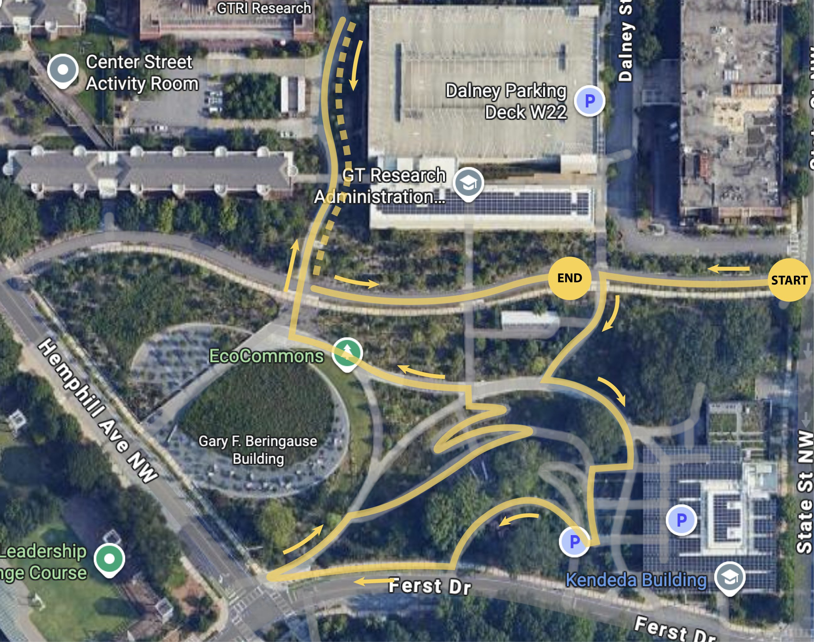
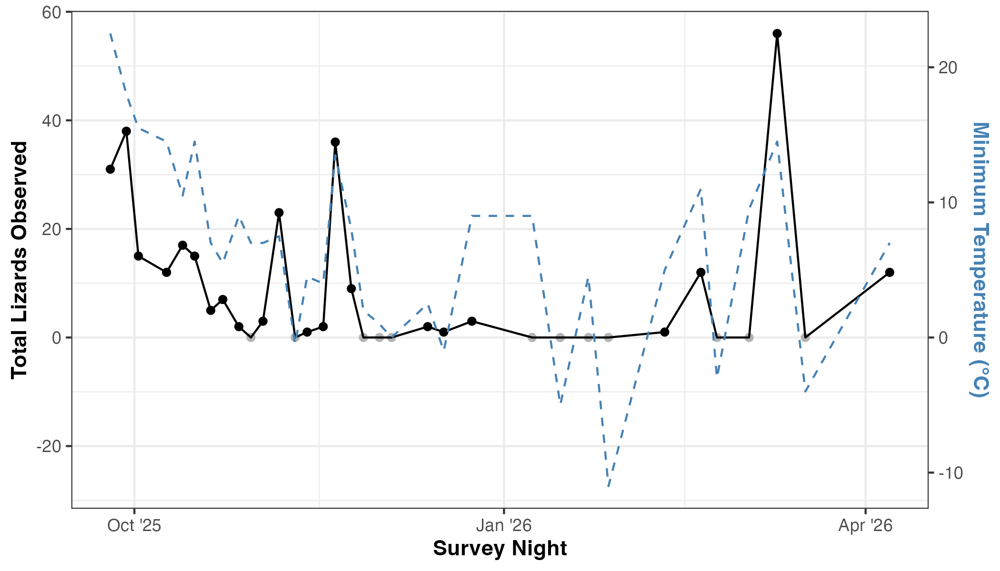
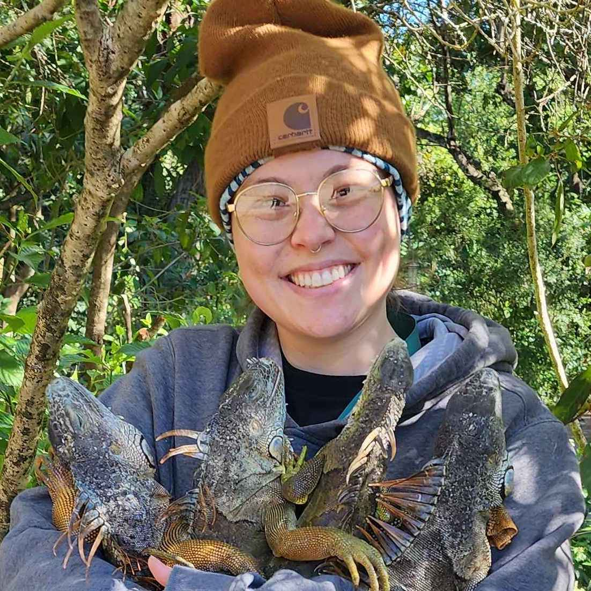
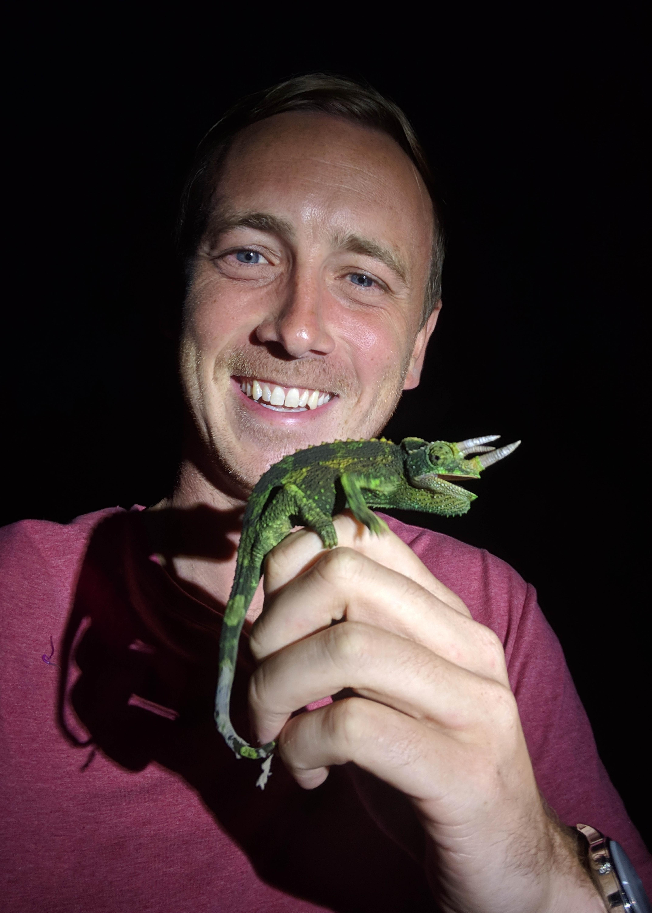

Green anoles sleep exposed on leaves and twigs all summer long — then vanish in winter. We're building a network of collaborators to track Anolis carolinensis sleeping habits across their range. We want to know when green anoles change their sleeping perch in an effort to understand thermal evolution at range edges.
Join the networkAbout the project
Anoles commonly sleep exposed on leaves and twigs so they can sense approaching predators — a snake slinking down a branch triggers a drop to the ground and escape. This survival strategy is very effective in warm tropical environments, but in temperate climates, sleeping exposed can be risky. If low overnight temperatures dip below the lizard's cold tolerance limit, it risks death.
Despite these challenges, the green anole (Anolis carolinensis), an ancestrally tropical lizard, lives as far north as Virginia. In the spring and summer, anoles can be found sleeping out on leaf tips after dark — but in the winter, they disappear completely in temperate regions. Where do they go? When do they switch their sleeping behavior?
To answer these questions, we conduct weekly evening spotlight surveys along a standardized transect. By tracking lizard abundance, perch characteristics, and air temperature throughout the seasonal transition we can pinpoint when anoles shift their behavior and begin seeking nocturnal refuges. We are excited to collaborate across the green anole's range to test for local adaptation in thermal limits or seasonal behavior patterns.
"In warm months it is common to see them sleeping exposed out on leaves, but they disappear completely in the winter. Where do they go? When does the switch happen? Let's find out!"
Pilot Project
Our study site at Georgia Tech is a 7-acre natural area on campus where cultivation of native plants is prioritized and trails provide easy access throughout. Green anoles are abundant and obvious on sunny days. Your institution's transect should follow similar principles.

Fig. 1 — GT EcoCommons study area and transect. Dotted line segment is not re-surveyed (surveyed outbound only).
As ectotherms, lizards maintain body temperature by behaviorally thermoregulating — basking in the sun, escaping to thermally-stable refugia. As air temperatures drop during the cooler months, green anoles increasingly abandon their arboreal sleeping positions in favor of more thermally buffered refuges. This behavioral shift is the central focus of our weekly surveys. Tracking the timing and magnitude of this transition across sites gives us insight into inter-population variability in response to temperature and to probe whether thermal behavioral thresholds differ across the species' range.
The image to the right shows the total number of lizards encountered during a survey night. Pairing these data with concurrerent air temperature logging, illustrates that sleeping behavior is closely tied to minimum air temperature. Expanding these data across the Anolis carolinensis range could reveal local adaptation.

Fig. 2 — Total Anolis carolinensis recorded during a nocturnal survey at the GT EcoCommons site. Each point represents a single survey night with 0-lizard nights in gray. Minimum air temperature recorded by iButtons in the 24 hours preceding the survey.
Joining the network
To get started, reach out for a quick conversation with the project leads, find a suitable study site, and get IACUC approval at your institution. Here's the path from start to your first survey night.
Reach out to get started. We will discuss picking the perfect transect, when you should start surveying, and walk you through the protocol. This conversation ensures consistent data collection across the region.
Get in touchSelect a semi-natural area with reliable green anole populations and consistent evening access throughout the year. Map a 500–1000m transect around the area, including known green anole sleeping sites.
See our example siteMany institutions require IACUC approval, even if your team does not intend to capture lizards. We provide a template based on our approved GT protocol — your coordinator can adapt it for submission to your institution. Start this process early; there are often many stages of review.
Download templateCore gear is simple: datasheets, clipboard, tape measure, and headlamps or flashlights. Optional temperature data is highly valuable — iButton loggers and a thermocouple allow site-specific microclimate characterization beyond what weather stations provide.
View full equipment listAll surveyors must be familiar with the full protocol before the first survey. Pay particular attention to the data collection section — consistent recording of perch type, height, and width is essential for data integrity.
Read protocolEnter data into the shared network spreadsheet after each survey. Back up your datasheets — scan or photograph them and store in at least two locations. The lead team reviews submissions on a rolling basis and will flag any issues.
Open data spreadsheetWhat to bring
Evening surveys require minimal gear. Temperature data collection is strongly encouraged but not required to participate.
Survey methodology
All surveys must follow this protocol. Any deviations — weather, visibility, personnel — should be recorded in the datasheet and flagged to the lead team.
Surveys occur in the evening, 1 hour after sunset. This timing ensures lizards are settled into their sleeping spots, won't be disturbed by surveyors, and are detectable by spotlight.
The survey ends when the team reaches the end of the transect — do not turn back early. Record the end time on the datasheet when you arrive at the end point.
Before walking, fill in the header block on the datasheet. These fields are required — an incomplete header means the survey cannot be entered into the database.
All observers should walk together and survey both sides of the transect simultaneously, scanning vegetation with headlamps and flashlights. Check leaves, twigs, branches, trunks, rocks, and roots.
Green anoles sleeping on leaves often appear pale or white-ish under a headlamp — quite different from their daytime coloration. Look for this characteristic at the tips of branches and on the upper surfaces of leaves.
For every lizard detected, record the following fields on the datasheet before approaching or attempting capture. Movement toward the lizard changes behavior and may cause it to flee.
Capture is optional and requires IACUC approval at your institution. If a lizard is captured, measure and record body temperature as quickly as safely possible.
Do NOT capture every lizard observed. Excessive handling may cause lizards to change their sleeping habits to avoid detection. We recommend capturing a maximum of 5 lizards per survey for body temperature sampling.
Continue until the end of the transect. Fill in the final data fields before leaving the site.
Lost survey data is unrecoverable! Following every survey:
Ensure data is copied and recorded in multiple locations to prevent data loss. The paper datasheet, a scan, and the shared spreadsheet are three independent backups — maintain all three.
Downloads & resources
All documents are versioned — check the date before each field season and use the most current version.
The shared Google Sheet where all survey data is entered. Contains tabs for nightly encounter data and site metadata. Requires edit access — request via the contact form.
Open in Google SheetsTwo-sided PDF datasheet for recording survey information. Print one copy per survey night. Current version: September 2025.
Download PDFThe full protocol document, including project overview, equipment list, study site guidance, iButton deployment instructions, and complete data collection procedure. Read before your first survey.
Download PDFOur GT-approved IACUC protocol can be used as a template for submission at your institution.
Download .docxWe deploy iButton or HOBO temperature loggers across the site in three different treatments: tree branch, leaf litter, and under cover such as a rock or log. Reach out directly for detailed guidance.
Download PDFHigh-resolution version of the GT EcoCommons transect map for reference.
Download imageThe team
Questions about the project, site selection, protocol, or data entry can go to either of us. For urgent field questions, text is fastest.


{kind=link}